Three WooCommerce incidents reproduced, resolved, and verified.
These controlled portfolio exercises were completed inside a disposable WordPress Playground store. They are not presented as production customer incidents.
3completed troubleshooting exercises
12evidence screenshots
€5verified German flat-rate shipping
#21test order completed and verified
Case 1 · Shipping
German flat-rate shipping missing at checkout
ImpactNo delivery option for a valid German address.
Root causeFlat rate disabled inside the matching zone.
ChangeEnabled Flat rate and restored Germany coverage.
Verification€5 displayed for postcode 10115 Berlin.
I confirmed the symptom at checkout, inspected the matching Germany zone, restored country-wide coverage, enabled the Flat rate method, and retested with a complete Berlin address.
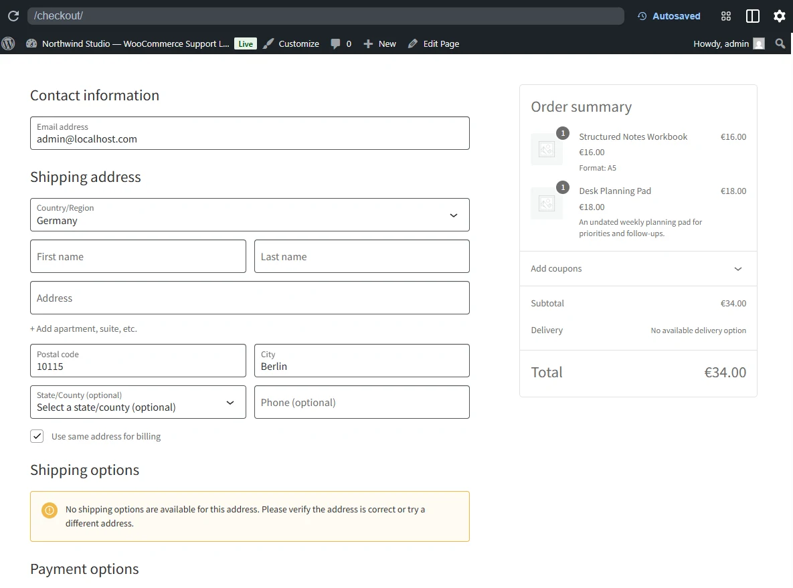
Reproduced symptom: no shipping option for Germany / 10115 Berlin.
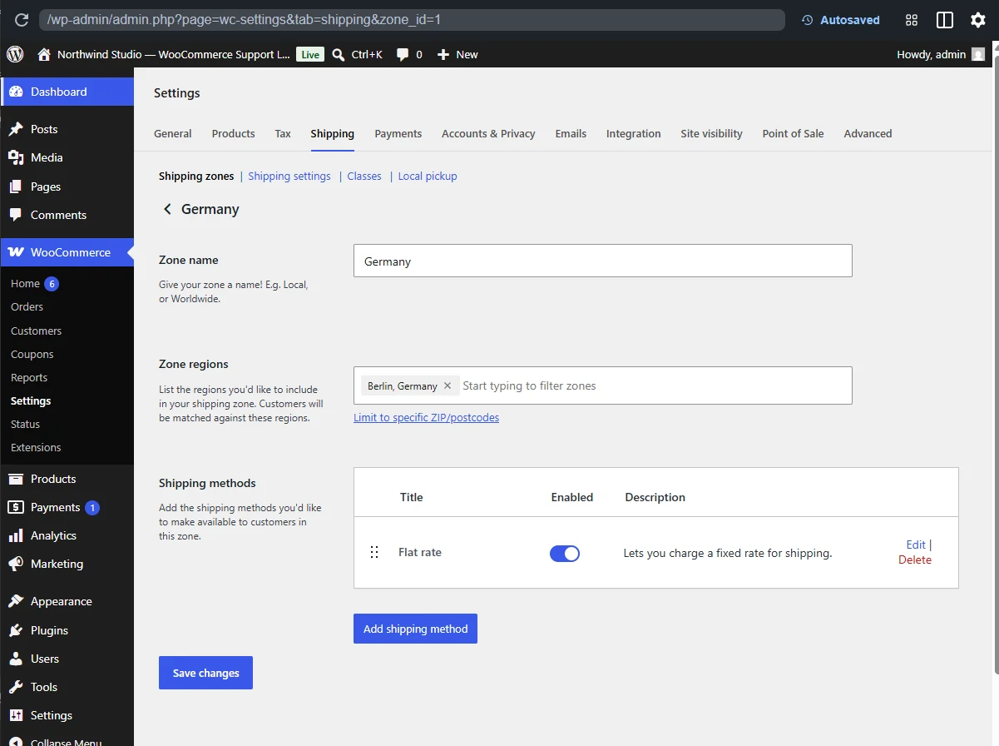
Root cause: Flat rate existed but was disabled.
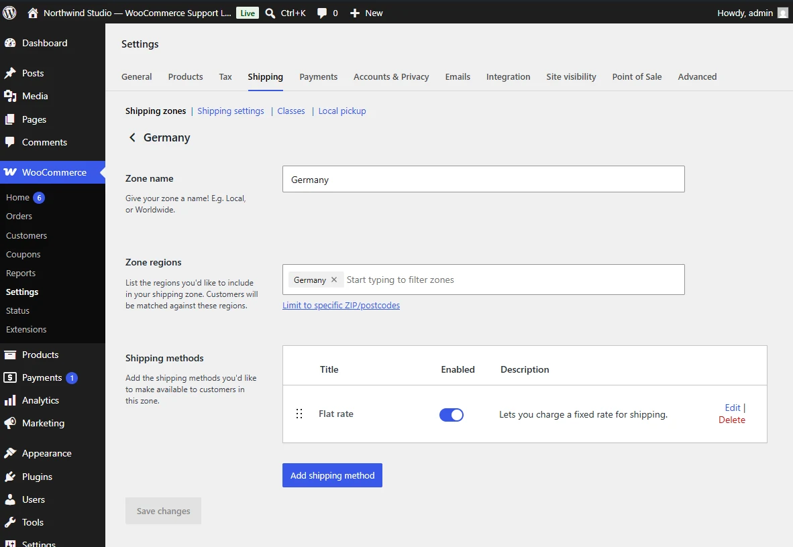
Restored Germany coverage and enabled Flat rate.
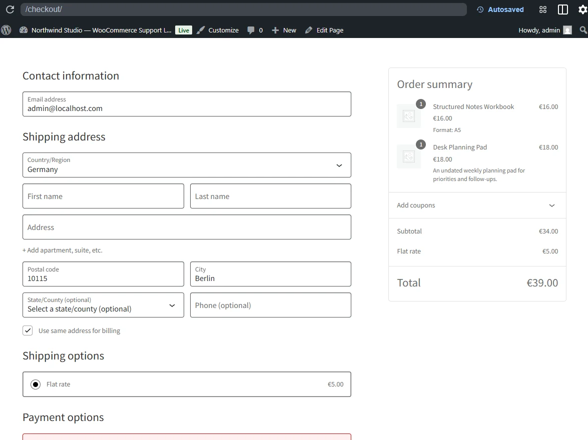
Verified result: Flat rate — €5.00.
Customer-facing reply
Hi,
I found that the Germany shipping zone was matching the address correctly, but the Flat rate method inside that zone was not active.
I restored the method with the configured €5 cost and tested checkout again using a Berlin address. The shipping option is now appearing as expected.
Best,
Eva
Internal note
Reproduced with Germany / 10115 Berlin.
Flat rate was inactive in the matching zone. Restored Germany coverage, enabled the method at €5, and retested.
Result: shipping displayed correctly.
Risk: low; configuration-only change.
Case 2 · Inventory
One variation unavailable while another remained in stock
ImpactA5 could not be purchased.
ScopeA4 remained available with eight units.
Root causeA5 quantity zero; no backorders.
VerificationA5 restored to 15 units.
I compared both variations on the storefront. A4 remained available, isolating the problem to A5. The A5 variation had stock management enabled with a quantity of zero.
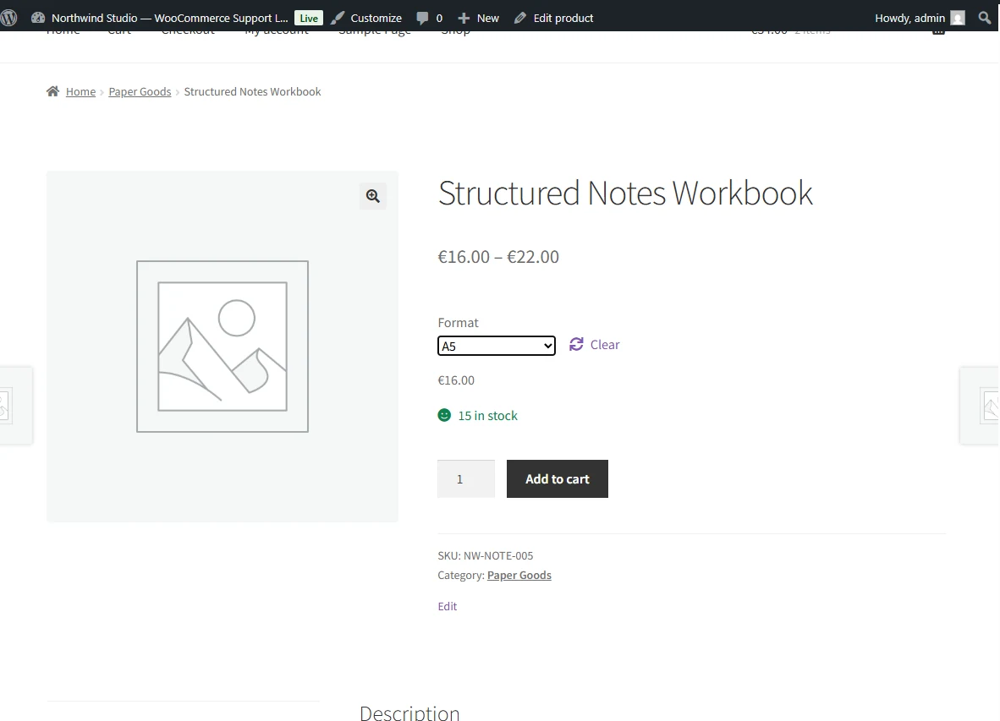
Known-good baseline: A5 with 15 units.
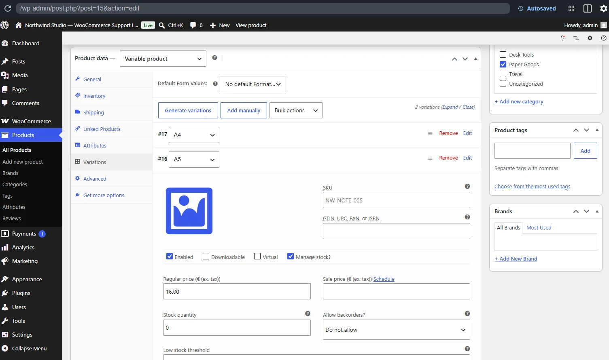
Controlled failure: A5 quantity set to zero.
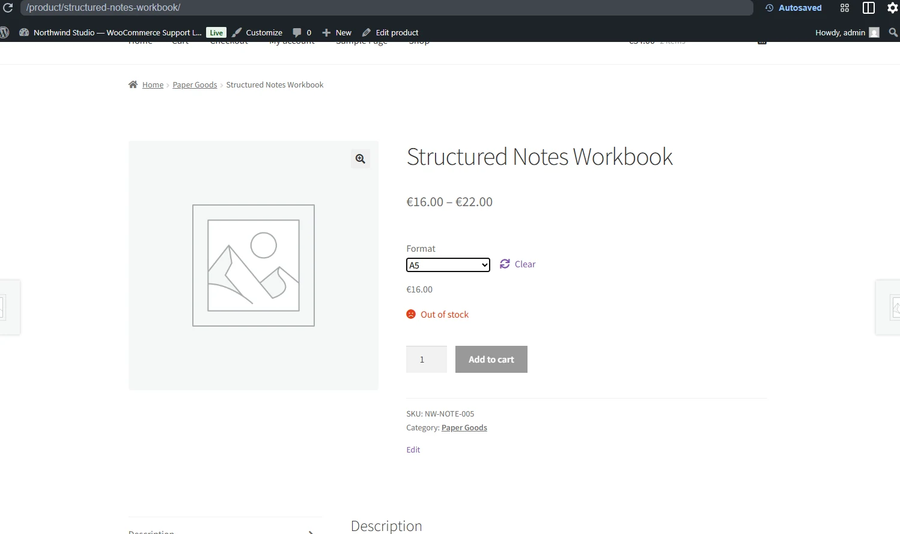
Customer-visible symptom: A5 Out of stock.
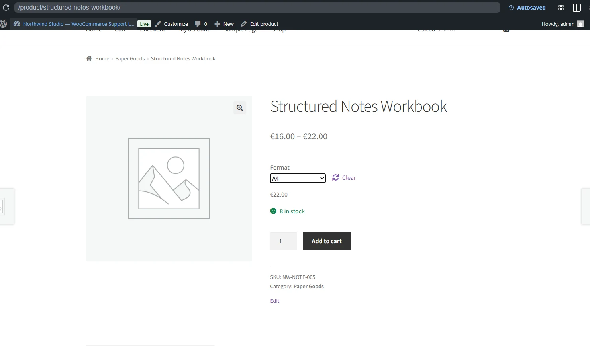
Scope check: A4 remained purchasable.
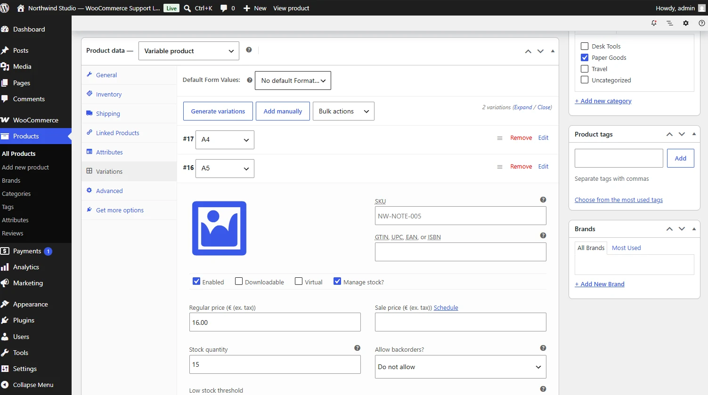
Restoration: A5 returned to 15 units.
Customer-facing reply
Hi,
I checked the individual variations and found that the A5 format had stock management enabled with a quantity of zero. The A4 format was unaffected.
I restored the A5 quantity to 15 and verified that Add to cart is available again.
Best,
Eva
Internal note
Parent product remained published. A4 worked normally. A5 had quantity 0 and backorders disabled.
Restored A5 to 15 and verified storefront availability. A4 was not changed.
Case 3 · Payments & orders
Checkout blocked because no payment method was available
ImpactCustomer could not complete checkout.
Root causeNo payment gateway enabled.
ResolutionEnabled Direct Bank Transfer.
ResultOrder #21 created for €23 and left On hold.
I enabled Direct Bank Transfer as a safe offline test method, completed checkout in a clean session, and verified the resulting order in the WooCommerce admin.
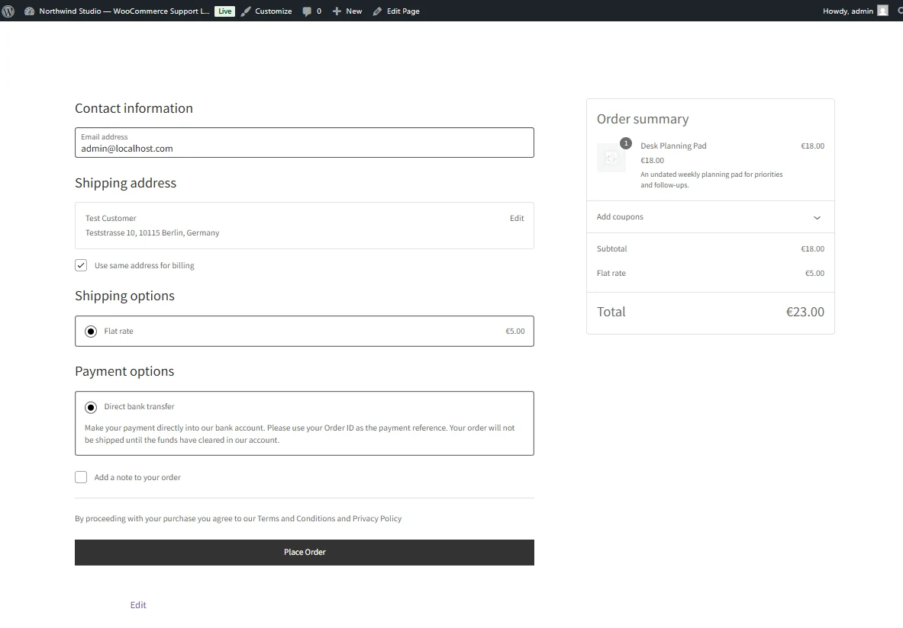
Restored checkout: Direct Bank Transfer and €5 shipping.
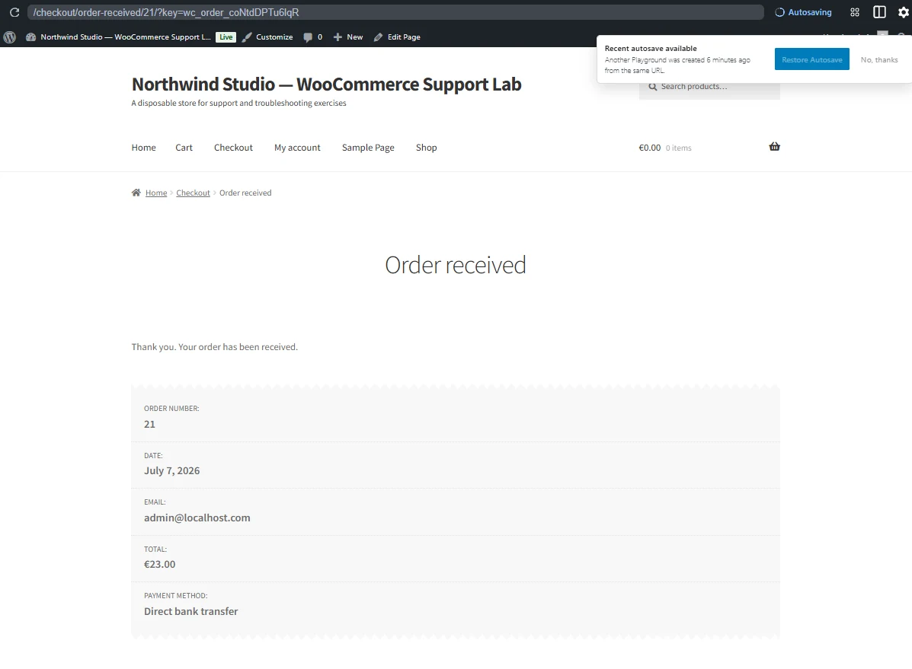
Order #21 received for €23.
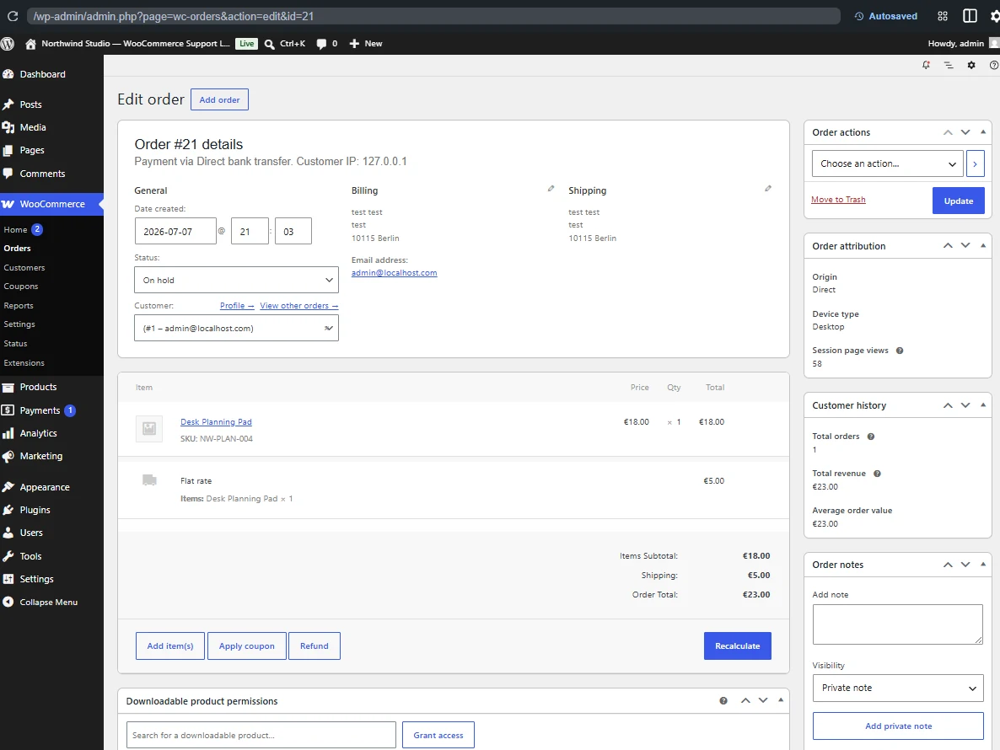
Admin verification: €18 item + €5 shipping; On hold.
Risk control: Creating a bank-transfer order is not proof that payment was received. The order correctly remained On hold.
Customer-facing reply
Hi,
Checkout was unable to proceed because the store did not have an enabled payment method.
I enabled Direct Bank Transfer, retested the checkout, and confirmed that an order can now be created successfully. Bank-transfer orders remain On hold until payment is verified.
Best,
Eva
Internal note
Enabled Direct Bank Transfer and placed test order #21:
- Item: Desk Planning Pad, €18
- Shipping: €5
- Total: €23
- Status: On hold
Do not mark paid until transfer is verified.
Additional learning
Recognizing a contaminated test state
Repeated failed checkout attempts produced a stock-availability conflict in one disposable session. I restarted from a clean baseline rather than continue diagnosing an environment changed by prior tests.
Lesson: Restore a known baseline before drawing conclusions when earlier tests may have changed sessions, orders, reservations, or stock.